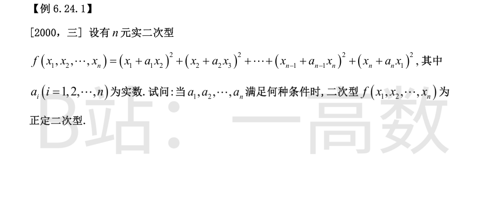
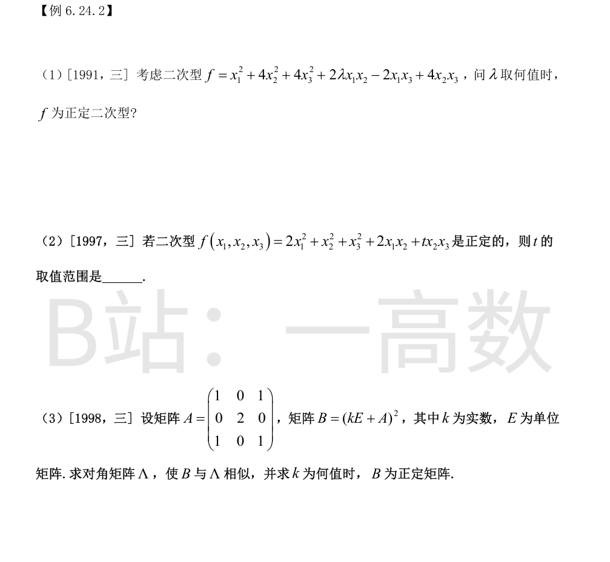
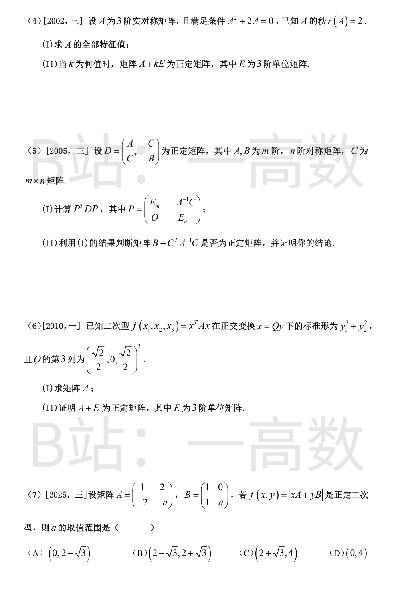
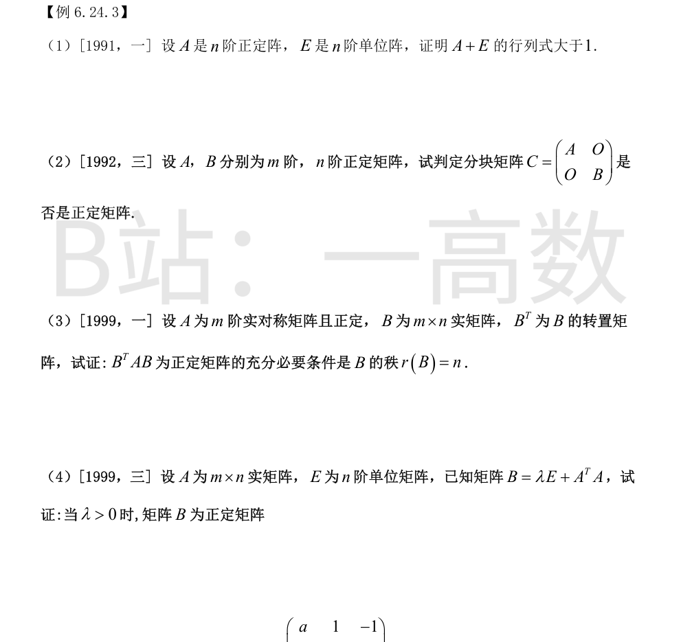
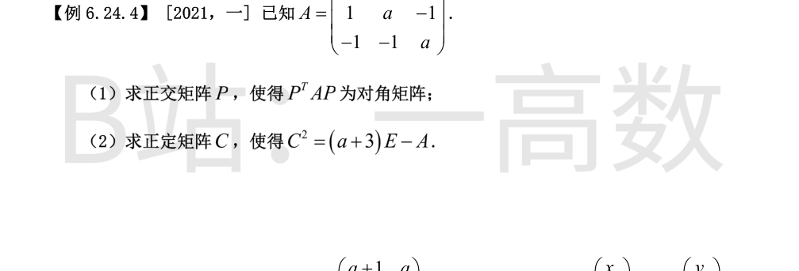
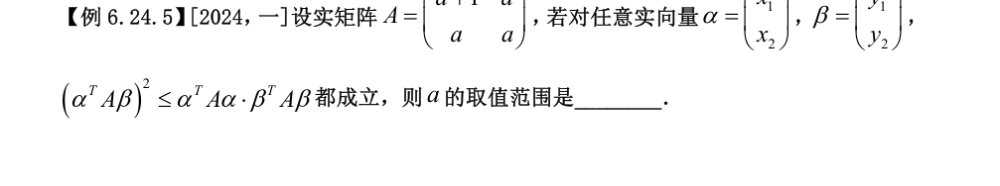
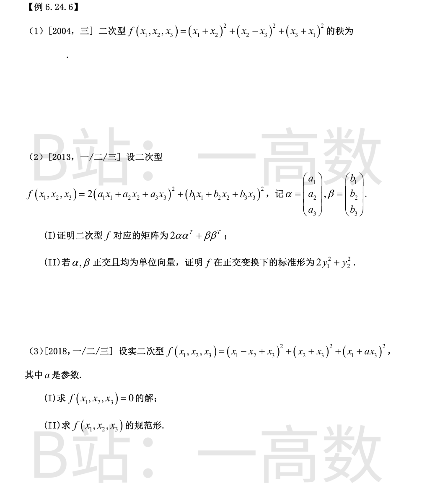

记 y_i=x_i+a_ix_{i+1}（约定 x_{n+1}=x_1），则 y=Cx，其中 C 为对角线全 1、(i,i+1) 元为 a_i(i=1,…,n−1)、(n,1) 元为 a_n、其余为 0 的 n 阶矩阵。于是
$$f=y^{T}y=(Cx)^{T}(Cx)=x^{T}C^{T}Cx .$$
f 正定 ⟺ 对任意 x≠0 有 ‖Cx‖²>0 ⟺ Cx=0 只有零解 ⟺ C 可逆。
按定义展开 det C，非零项只有两项：主对角线乘积 1，以及取 (1,2),(2,3),…,(n,1) 的循环排列，元素积为 a_1a_2\cdots a_n，列标排列 (2,3,…,n,1) 的逆序数为 n−1，符号为 (-1)^{n-1}=(-1)^{n+1}：
$$\det C=1+(-1)^{n+1}a_1a_2\cdots a_n .$$
故 f 正定 ⟺ det C≠0，即
$$a_1a_2\cdots a_n\neq(-1)^{n} .$$
（验证 n=2：条件 a_1a_2≠1，与 Δ2=1−a_1a_2 一致。）


二次型矩阵
$$A=\begin{pmatrix}1&\lambda&-1\\ \lambda&4&2\\ -1&2&4\end{pmatrix}.$$
f 正定 ⟺ 各顺序主子式全大于零：
Δ1=1>0；Δ2=4−λ²>0 ⟺ |λ|<2；
$$\Delta_3=\det A=1(16-4)-\lambda(4\lambda+2)+(-1)(2\lambda+4)=12-4\lambda^{2}-4\lambda=4(2-\lambda)(\lambda+1)>0,$$
即 −1<λ<2。与 |λ|<2 取交集得
$$-1<\lambda<2 .$$
【仲裁修正】独立校验发现分歧，经仲裁重解，以本答案为准：solver 算错三阶顺序主子式（正确 \Delta_3=8-4\lambda^2-4\lambda=-4(\lambda+2)(\lambda-1)，如 \lambda=-1.5 时 f 正定），得错误区间 -1<\lambda<2；A、B 的 -2<\lambda<1 正确
矩阵
$$A=\begin{pmatrix}2&1&0\\1&1&t/2\\0&t/2&1\end{pmatrix}.$$
顺序主子式：Δ1=2>0；Δ2=2×1−1²=1>0；
$$\Delta_3=\det A=2\Big(1-\frac{t^{2}}{4}\Big)-1(1-0)+0=1-\frac{t^{2}}{2}>0\iff t^{2}<2 .$$
故正定 ⟺ −√2<t<√2。
A 实对称。特征方程
$$|\lambda E-A|=\begin{vmatrix}\lambda-1&0&-1\\0&\lambda-2&0\\-1&0&\lambda-1\end{vmatrix}=(\lambda-2)\big[(\lambda-1)^{2}-1\big]=\lambda(\lambda-2)^{2},$$
故 A 的特征值为 0, 2, 2。kE+A 的特征值为 k, k+2, k+2，B=(kE+A)² 的特征值为
$$k^{2},\ (k+2)^{2},\ (k+2)^{2}.$$
B 实对称必可对角化，取
$$\Lambda=\mathrm{diag}\big(k^{2},(k+2)^{2},(k+2)^{2}\big).$$
B 正定 ⟺ 特征值全大于零 ⟺ k²>0 且 (k+2)²>0 ⟺ k≠0 且 k≠−2。
(I) 设 Ax=λx，由 A²+2A=0 得 (λ²+2λ)x=0，特征向量非零，故 λ²+2λ=0，λ∈{0,−2}。
A 实对称必可对角化，非零特征值的个数等于 r(A)=2，故特征值为
$$\lambda_1=\lambda_2=-2,\quad \lambda_3=0 .$$
(II) A+kE 的特征值为 k−2, k−2, k，仍为对称矩阵。正定 ⟺ 特征值全正 ⟺ k−2>0 且 k>0，即
$$k>2 .$$
D 正定 ⟹ A 正定：对 x≠0，(x^{T},O)D(x;0)=x^{T}Ax>0；故 A 可逆，P 有意义，且 P 可逆（对角块为单位阵）。
(I) 由 A^{T}=A 得 (A^{-1})^{T}=A^{-1}，于是
$$P^{T}=\begin{bmatrix}E_m&O\\ -C^{T}A^{-1}&E_n\end{bmatrix}.$$
先算
$$P^{T}D=\begin{bmatrix}A&C\\ O&\,B-C^{T}A^{-1}C\end{bmatrix}$$
（左下块 −C^{T}A^{-1}A+C^{T}=O），再右乘 P：
$$P^{T}DP=\begin{bmatrix}A&C\\ O&B-C^{T}A^{-1}C\end{bmatrix}\begin{bmatrix}E_m&-A^{-1}C\\ O&E_n\end{bmatrix}=\begin{bmatrix}A&O\\ O&B-C^{T}A^{-1}C\end{bmatrix}.$$
(II) 是正定矩阵。证明：D 正定且 P 可逆，合同的矩阵正定性相同，故 P^{T}DP 正定；由 (I) 它对称且分块对角，其右下块 B−C^{T}A^{-1}C 显然对称。对任意 y≠0，取 z=(0;y)^{T}≠0，则
$$0<z^{T}(P^{T}DP)z=y^{T}\big(B-C^{T}A^{-1}C\big)y ,$$
故 B−C^{T}A^{-1}C 正定。
(I) 标准形为 y_1^{2}+y_2^{2}（无 y_3^{2} 项），故 A 的特征值为 1, 1, 0。Q 的第 3 列 η_3=(√2/2,0,√2/2)^{T} 为单位向量，且 Aη_3=0。
A 实对称，正交对角化得
$$A=Q\,\mathrm{diag}(1,1,0)\,Q^{T}=QQ^{T}-Q\,\mathrm{diag}(0,0,1)\,Q^{T}=E-\eta_3\eta_3^{T} .$$
而
$$\eta_3\eta_3^{T}=\begin{pmatrix}1/2&0&1/2\\0&0&0\\1/2&0&1/2\end{pmatrix},$$
所以
$$A=E-\eta_3\eta_3^{T}=\begin{pmatrix}1/2&0&-1/2\\0&1&0\\-1/2&0&1/2\end{pmatrix}.$$
(II) A+E 的特征值为 1+1=2, 2, 0+1=1，全大于零，且 A+E 实对称，故 A+E 为正定矩阵。
$$xA+yB=\begin{pmatrix}x+y&2x\\ -2x+y&a(y-x)\end{pmatrix},$$
$$f(x,y)=|xA+yB|=(x+y)\cdot a(y-x)-2x\,(y-2x)=(4-a)x^{2}-2xy+ay^{2} .$$
其矩阵为 [[4−a, −1],[−1, a]]，正定条件：
$$4-a>0,\qquad (4-a)a-1>0 .$$
第二式即 a²−4a+1<0，解得 2−√3<a<2+√3（约 0.27<a<3.73）；该区间自动满足 a<4。故选 (B)。

A 正定 ⟹ A 实对称且特征值 λ_1,…,λ_n 全大于零。A+E 的特征值为 1+λ_i（i=1,…,n），故
$$|A+E|=\prod_{i=1}^{n}(1+\lambda_i) .$$
由 λ_i>0 知每个因子 1+λ_i>1，因此
$$|A+E|=\prod_{i=1}^{n}(1+\lambda_i)>1 .$$
证毕。
C 显然对称。任取 z=(x;y)∈R^{m+n}，z≠0，则 x,y 不全为零，且
$$z^{T}Cz=x^{T}Ax+y^{T}By .$$
若 x≠0，由 A 正定得 x^{T}Ax>0；由 B 正定（从而半正定）得 y^{T}By≥0，故和大于零；
若 x=0，则 y≠0，y^{T}By>0。
综上对任意 z≠0 有 z^{T}Cz>0，故 C 为正定矩阵。
先看对称性：(B^{T}AB)^{T}=B^{T}AB，故 B^{T}AB 总是对称矩阵。
必要性：设 B^{T}AB 正定。若 r(B)<n，齐次方程 Bx=0 有非零解 x_0，则
$$x_0^{T}(B^{T}AB)x_0=(Bx_0)^{T}A(Bx_0)=0,$$
与正定性（应大于零）矛盾。故 r(B)=n。
充分性：设 r(B)=n，则 Bx=0 只有零解，即 x≠0 ⟹ Bx≠0。于是对任意 x≠0：
$$x^{T}(B^{T}AB)x=(Bx)^{T}A(Bx)>0$$
（A 正定，Bx≠0）。故 B^{T}AB 正定。
对称性：(A^{T}A)^{T}=A^{T}A，故 B^{T}=B。
对任意 n 维非零实向量 x：
$$x^{T}Bx=\lambda x^{T}x+x^{T}A^{T}Ax=\lambda\|x\|^{2}+\|Ax\|^{2}\ge\lambda\|x\|^{2}>0,$$
其中 λ>0 且 ‖x‖²>0。故 B 为正定矩阵。

注：矩阵第一行按本切片图与例 6.24.3 图底部衔接处确认为 (a,1,−1)。
$$|\lambda E-A|=\det\begin{pmatrix}\lambda-a&-1&1\\ -1&\lambda-a&1\\ 1&1&\lambda-a\end{pmatrix}=(\lambda-a)^{3}-3(\lambda-a)-2 .$$
令 t=λ−a：t³−3t−2=(t+1)²(t−2)，故特征值
$$\lambda_1=\lambda_2=a-1,\qquad \lambda_3=a+2 .$$
λ=a−1：A−(a−1)E 的三行均成比例于 (1,1,−1)，方程为 x_1+x_2−x_3=0，取正交基础解系
$$\xi_1=(1,-1,0)^{T},\qquad \xi_2=(1,1,2)^{T}\ (\xi_1^{T}\xi_2=0).$$
λ=a+2：解 (A−(a+2)E)x=0 得 ξ_3=(1,1,−1)^{T}（与 ξ_1,ξ_2 自动正交）。
单位化得
$$P=\begin{pmatrix}1/\sqrt2&1/\sqrt6&1/\sqrt3\\ -1/\sqrt2&1/\sqrt6&1/\sqrt3\\ 0&2/\sqrt6&-1/\sqrt3\end{pmatrix},\qquad P^{T}AP=\mathrm{diag}(a-1,\,a-1,\,a+2) .$$
记 B=(a+3)E−A=[[3,−1,1],[−1,3,1],[1,1,3]]。B 与 A 有相同特征向量，特征值为 (a+3)−(a−1)=4（二重）、(a+3)−(a+2)=1。
设 C 正定且 C²=B，则 C 与 B 共享特征向量系，C 的特征值为 √4=2（二重）、√1=1，且 C 为对称谱分解：
$$C=P\,\mathrm{diag}(2,2,1)\,P^{T}=2u_1u_1^{T}+2u_2u_2^{T}+u_3u_3^{T},$$
其中 u_i 为第 (1) 问的单位特征向量。展开：
2u_1u_1^{T}=[[1,−1,0],[−1,1,0],[0,0,0]]，2u_2u_2^{T}=(1/3)[[1,1,2],[1,1,2],[2,2,4]]，u_3u_3^{T}=(1/3)[[1,1,−1],[1,1,−1],[−1,−1,1]]，相加得
$$C=\frac13\begin{pmatrix}5&-1&1\\ -1&5&1\\ 1&1&5\end{pmatrix}\quad\Big(\text{即 }C=\tfrac13(B+2E)\Big).$$
验证：C²=(1/9)[[27,−9,9],[−9,27,9],[9,9,27]]=B ✓；C 的特征值为 2,2,1 全大于零，故 C 正定。该 C 与 a 无关。
【仲裁修正】独立校验发现分歧，经仲裁重解，以本答案为准：A 把 (a+3)E-A 的特征值误为 1,4,2a+2（正确为 4,4,1，C=(B+2E)/3 与 a 无关、无需 a>-1/2），给出错误的含参 C；solver 与 B 一致且正确

该不等式对全体 α,β 成立 ⟺ A 半正定或半负定：
· 若 A⪰0，令 ⟨u,v⟩=u^{T}Av，这是半内积，其 Cauchy–Schwarz 不等式 (α^TAβ)²≤(α^TAα)(β^TAβ) 恒成立；
· 若 A⪯0，对 −A 用同一论证；
· 反之，若 A 不定（特征值 λ1>0>λ2，规范特征向量 u1,u2），取 α=√(−λ2)u1+√(λ1)u2，则 α^TAα=λ1(−λ2)+λ2λ1=0 且 α≠0、Aα≠0；取 β=Aα，则左边 =(α^{T}Aβ)²=‖Aα‖⁴>0，右边 =0·(β^{T}Aβ)=0，不等式失效。二阶对称阵不会出现「不定且奇异」。
对 A=[[a+1,a],[a,a]]：det A=(a+1)a−a²=a。
半正定 ⟺ 全部主子式≥0：a+1≥0，a≥0，det A=a≥0 ⟺ a≥0；
半负定 ⟺ −A 半正定：−a≥0，−(a+1)≥0，det A=a≥0，无解。
故 a 的取值范围是
$$a\ge0 .$$

展开：f=2x_1^{2}+2x_2^{2}+2x_3^{2}+2x_1x_2-2x_2x_3+2x_1x_3，
$$A=\begin{pmatrix}2&1&1\\1&2&-1\\1&-1&2\end{pmatrix},\qquad \Delta_1=2>0,\ \Delta_2=3>0,$$
$$\det A=2(4-1)-1(2+1)+1(-1-2)=6-3-3=0 .$$
Δ2>0 而 det A=0，故 r(A)=2，即 f 的秩为 2（特征值为 0,3,3）。
(I) 记 A=2αα^{T}+ββ^{T}，显然 A^{T}=A。由 (α^{T}x)^{2}=x^{T}αα^{T}x：
$$f=2x^{T}\alpha\alpha^{T}x+x^{T}\beta\beta^{T}x=x^{T}\big(2\alpha\alpha^{T}+\beta\beta^{T}\big)x=x^{T}Ax,$$
故 f 对应的矩阵为 2αα^{T}+ββ^{T}。
(II) 设 α,β 为正交单位向量，则 α^{T}α=β^{T}β=1，α^{T}β=0：
$$A\alpha=2\alpha(\alpha^{T}\alpha)+\beta(\beta^{T}\alpha)=2\alpha,\qquad A\beta=2\alpha(\alpha^{T}\beta)+\beta(\beta^{T}\beta)=\beta .$$
又对任意与 α,β 都正交的非零 γ，Aγ=0。故 A 的特征值为 2, 1, 0（A 实对称），f 在正交变换下的标准形为
$$2y_1^{2}+y_2^{2} .$$
(I) f 是平方和，f=0 ⟺ 三式同时为零：
$$x_1-x_2+x_3=0,\qquad x_2+x_3=0,\qquad x_1+ax_3=0 .$$
由后两式 x_2=−x_3，x_1=−2x_3；代入第一式恒成立，代入第三式得 (a−2)x_3=0。
故 a≠2 时只有零解 x=0；a=2 时解为 x=k(−2,−1,1)^{T}（k 任意）。
(II) f=‖Lx‖²，L 的行向量为 (1,−1,1),(0,1,1),(1,0,a)，f 的秩等于 r(L)：
$$\det L=\det\begin{pmatrix}1&-1&1\\0&1&1\\1&0&a\end{pmatrix}=a-2 .$$
f 为平方和，负惯性指数恒为 0。故：
a≠2：r=3，f 正定，规范形为 y_1^{2}+y_2^{2}+y_3^{2}；
a=2：r=2，规范形为 y_1^{2}+y_2^{2}。